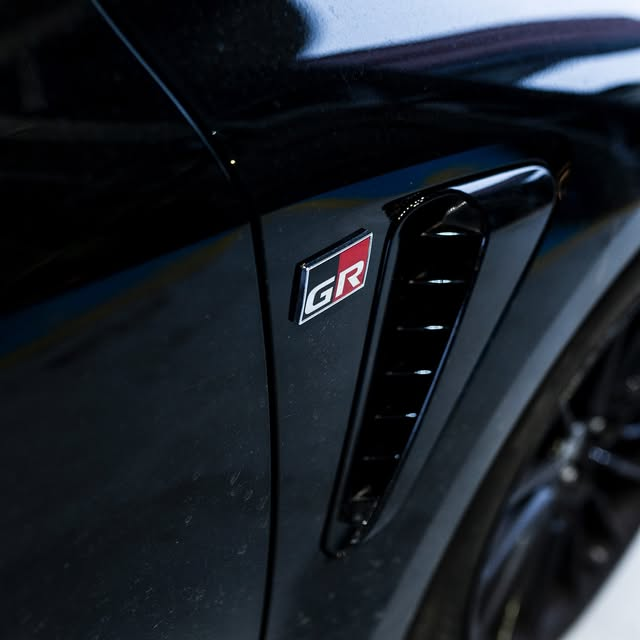
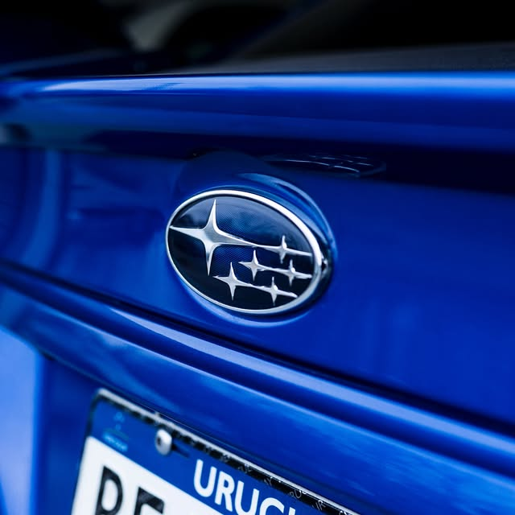
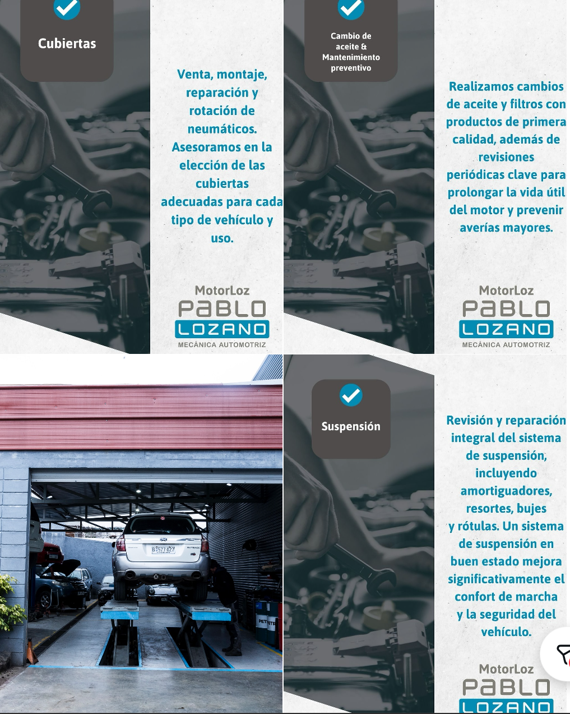
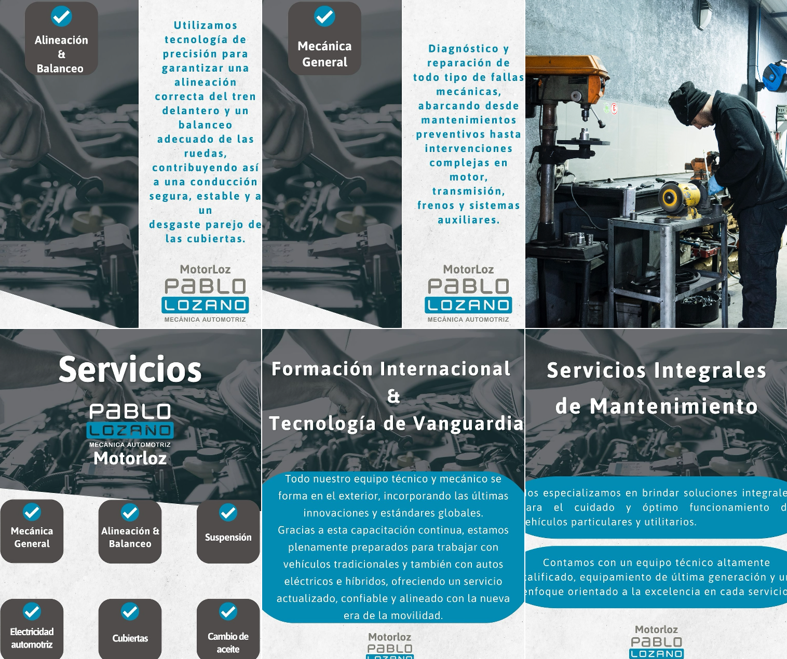
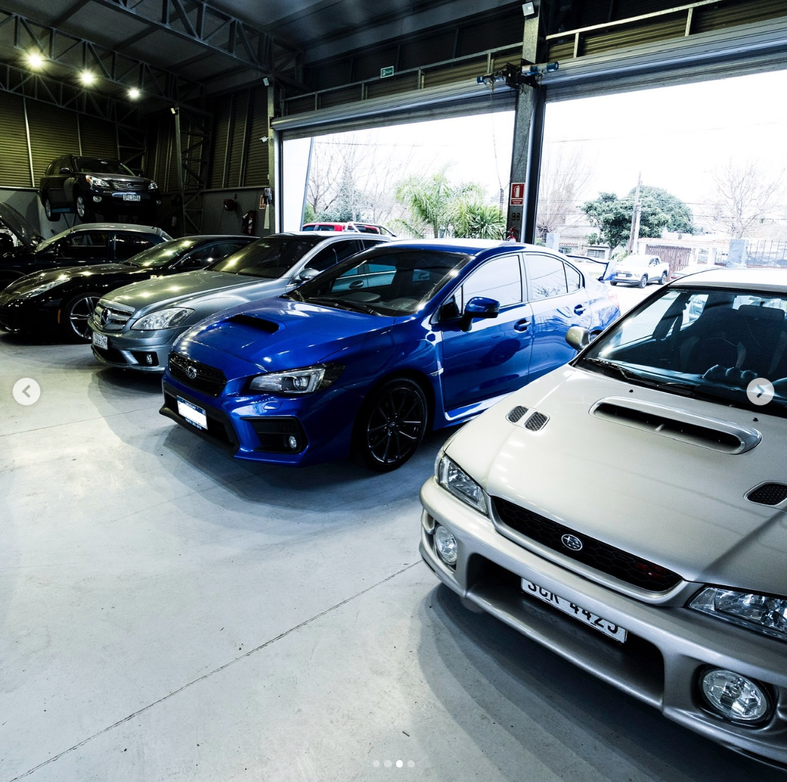
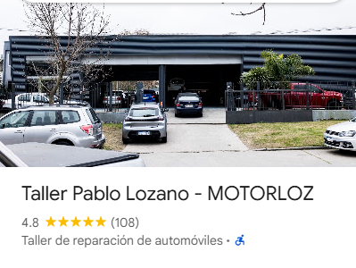

Escuchamos primeroEl síntoma también cuenta.
PASIÓN POR LA MECÁNICA / MONTEVIDEO
TALLER PABLO LOZANO — MOTORLOZ
Tu auto.
Nuestra
pasión.
Mecánica, tecnología y atención al detalle.
Para lo que te mueve, todos los días.
ATENCIÓN COORDINADADIAGNÓSTICO · MECÁNICA · MANTENIMIENTO
Conocé el taller 01 / EL TALLERMONTEVIDEO, URUGUAY
La diferencia
está en el detalle.
Hay autos que son mucho más que un medio de transporte. Son parte de tu rutina, de tus planes y de tu historia.
En MOTORLOZ reunimos mecánica general, mantenimiento y diagnóstico para cuidar vehículos particulares y utilitarios. Distintas marcas. Una misma dedicación.
Conocenos por dentroCuidamos tu auto.
Y tu tiempo.
ATENCIÓN PROFESIONALCONTACTO DIRECTOVISITAS COORDINADAS
Diagnóstico con criterioBuscamos la causa, no el atajo.
Seguimiento claroTe explicamos cada decisión.
02 / QUÉ HACEMOSEL CUIDADO, EN CADA SISTEMA
Todo conectado.
Todo importa.
Del mantenimiento periódico a una falla puntual. Encontrá el servicio que necesita tu vehículo.
Contanos qué le pasa a tu auto
EL OFICIO, DE CERCA01 / 06
01Mecánica general
Diagnóstico y reparación de fallas mecánicas. Mantenimiento e intervenciones en motor, transmisión, frenos y sistemas auxiliares.
Consultar por este servicio ↗02Alineación y balanceo
Alineación del tren delantero y balanceo de ruedas para una conducción estable y un desgaste parejo de las cubiertas.
Consultar por este servicio ↗03Suspensión
Revisión y reparación del sistema de suspensión, incluyendo amortiguadores, resortes, bujes y rótulas.
Consultar por este servicio ↗04Electricidad automotriz
Diagnóstico electrónico y reparación de sistemas eléctricos: arranque, carga, iluminación, sensores y módulos electrónicos.
Consultar por este servicio ↗05Cubiertas
Venta, montaje, reparación y rotación de neumáticos. Asesoramiento para elegir las cubiertas adecuadas según tu vehículo y su uso.
Consultar por este servicio ↗06Aceite y mantenimiento
Cambio de aceite y filtros, junto con revisiones periódicas para cuidar el motor y prevenir averías.
Consultar por este servicio ↗03 / PUERTAS ADENTROSEGUINOS EN INSTAGRAM ↗
Donde la pasión
se pone a trabajar.
Las manos. Las herramientas.
Los autos que nos mueven.
Un recorrido por el taller, sus instalaciones y los vehículos que forman parte de su día a día.
Ver más en @motorloz ↗CARÁCTER JAPONÉSSubaru en el corazón.
Subaru en el corazón.
Pasión multimarca.
Una afinidad especial por Subaru y la cultura automotriz japonesa. La misma dedicación para vehículos de distintas marcas, incluidos autos de alta gama.
ATENCIÓN MULTIMARCA
TOYOTA GR · VER PUBLICACIÓN ↗
SUBARU · VER PUBLICACIÓN ↗04 / PERSONAS Y TECNOLOGÍADETRÁS DE CADA TRABAJO
El oficio evoluciona.
La dedicación
permanece.
La formación continua es parte de la propuesta de MOTORLOZ: sus publicaciones destacan la capacitación en el exterior y la actualización del equipo técnico.
Una mirada que acompaña la evolución del automóvil, desde la mecánica tradicional hasta vehículos eléctricos e híbridos.
Consultá por tu vehículoMOTORLOZ / DE CERCAPERSONAS · TECNOLOGÍA · MECÁNICA
Conocimiento.
En acción.
Pequeños clips reales del taller, seleccionados para mostrar el oficio sin interrumpir la experiencia.

01 / MECÁNICACada detalle cuenta.Motor Subaru WRX · Publicación en Instagram ↗
02 / TECNOLOGÍAPrecisión y oficio.Herramientas y motor · Publicación en Instagram ↗
03 / EL TALLERPasión que se pone a trabajar.El día a día · Publicación en Instagram ↗
EN GUILLERMO ARROSPIDE 5311
Lozano & Oliva.
Servicio oficial Hyundai.
MOTORLOZ y Oliva Automotores se unieron para crear Lozano & Oliva, integrante de la red de servicios oficiales Hyundai en Uruguay.
Una propuesta de atención específica para Hyundai en la misma dirección del taller.
Conocé el servicio oficial ↗Alianza anunciada por Oliva Automotores y Hyundai Uruguay.05 / LA EXPERIENCIA DE LOS CLIENTESGOOGLE MAPS
La confianza
se construye.
Experiencias de quienes confiaron su auto al taller. Opiniones reales, publicadas en Google.

Ver en Google Maps ↗GoogleTaller Pablo Lozano — MOTORLOZTaller de reparación de automóviles · MontevideoVer perfil, fotos y todas las reseñas ↗Datos consultados en Google el 24/09/2026 · Las reseñas no se actualizan en tiempo real.
3 reseñas verificadas · Movimiento continuo · Consultá todas en Google.
06 / HABLEMOS DE TU AUTOSOLICITUD DE TURNO
El próximo paso.
Lo damos juntos.
Contanos qué vehículo tenés y en qué podemos ayudarte. El taller confirma después el día y el horario.
- 01Contanos sobre tu auto
- 02Enviá la consulta por WhatsApp
- 03Coordiná con el taller
Contacto con MOTORLOZ
@motorloz ↗
Info@motorloz.com.uy ↗
Podés consultar por Instagram. Prepará tu mensaje acá y copialo para enviarlo.
Llamar al 2601 3779 ↗@motorloz ↗
Info@motorloz.com.uy ↗
07 / VENÍ AL TALLERMONTEVIDEO, URUGUAY
Nos vemos
en MOTORLOZ.
Guillermo Arrospide 5311
Montevideo · CP 11400
Lunes a viernes: 8:30–13:00 y 14:00–18:30.
Sábados y domingos: cerrado.
UBICACIÓN VERIFICADAGuillermo Arrospide 5311Montevideo · Abrir para explorar